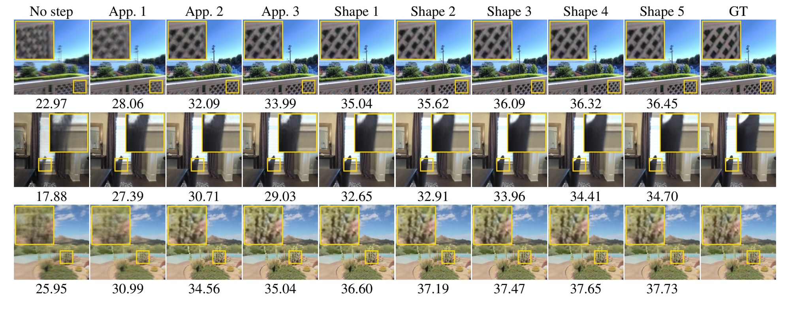

Gradient Steps Inside the Forward Pass
One target view of each scene rendered after every step of the forward pass: three appearance steps on opacity and color, then five shape steps. The steps read only the input views; the target view and its ground truth are never seen. PSNR is measured on the target view at 224 × 224 pixels.

One target view of three scenes of the narrow protocol before any step, after each of the Ka appearance steps and each of the Ks shape steps of the final model, and in the ground truth. The PSNR of this view is beneath each rendering.